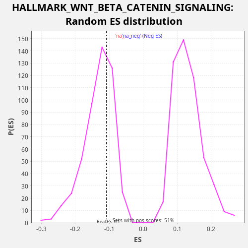

Profile of the Running ES Score & Positions of GeneSet Members on the Rank Ordered List
The same image in compressed SVG format
| Dataset | LabCL |
| Phenotype | NoPhenotypeAvailable |
| Upregulated in class | na_neg |
| GeneSet | HALLMARK_WNT_BETA_CATENIN_SIGNALING |
| Enrichment Score (ES) | -0.10788711 |
| Normalized Enrichment Score (NES) | -0.80991316 |
| Nominal p-value | 0.6666667 |
| FDR q-value | 0.6997065 |
| FWER p-Value | 1.0 |
| SYMBOL | RANK IN GENE LIST | RANK METRIC SCORE | RUNNING ES | CORE ENRICHMENT | |
|---|---|---|---|---|---|
| 1 | FZD1 | 508 | 11.850 | 0.0040 | Yes |
| 2 | AXIN1 | 705 | 7.538 | 0.0209 | Yes |
| 3 | DKK1 | 826 | 5.984 | 0.0410 | Yes |
| 4 | DVL2 | 1037 | 4.213 | 0.0573 | Yes |
| 5 | SKP2 | 1048 | 4.129 | 0.0819 | Yes |
| 6 | WNT6 | 1081 | 3.903 | 0.1055 | Yes |
| 7 | NOTCH4 | 3345 | 0.377 | 0.0370 | No |
| 8 | HEY2 | 4504 | 0.161 | 0.0142 | No |
| 9 | PPARD | 5177 | 0.100 | 0.0114 | No |
| 10 | FZD8 | 7099 | 0.021 | -0.0429 | No |
| 11 | GNAI1 | 7685 | 0.011 | -0.0421 | No |
| 12 | AXIN2 | 7687 | 0.011 | -0.0171 | No |
| 13 | KAT2A | 7725 | 0.011 | 0.0063 | No |
| 14 | NCSTN | 8959 | 0.001 | -0.0196 | No |
| 15 | NUMB | 9724 | 0.000 | -0.0262 | No |
| 16 | RBPJ | 10659 | -0.000 | -0.0398 | No |
| 17 | PTCH1 | 11871 | -0.006 | -0.0648 | No |
| 18 | FRAT1 | 12265 | -0.009 | -0.0560 | No |
| 19 | MAML1 | 12615 | -0.013 | -0.0455 | No |
| 20 | HDAC5 | 13434 | -0.024 | -0.0542 | No |
| 21 | HEY1 | 13957 | -0.034 | -0.0508 | No |
| 22 | HDAC11 | 15058 | -0.067 | -0.0713 | No |
| 23 | PSEN2 | 15903 | -0.100 | -0.0811 | No |
| 24 | ADAM17 | 15998 | -0.104 | -0.0600 | No |
| 25 | CTNNB1 | 16560 | -0.137 | -0.0582 | No |
| 26 | LEF1 | 17631 | -0.226 | -0.0774 | No |
| 27 | WNT5B | 18254 | -0.299 | -0.0781 | No |
| 28 | CUL1 | 18976 | -0.413 | -0.0829 | No |
| 29 | NCOR2 | 19300 | -0.483 | -0.0712 | No |
| 30 | MYC | 19358 | -0.496 | -0.0486 | No |
| 31 | NOTCH1 | 19552 | -0.541 | -0.0316 | No |
| 32 | HDAC2 | 20040 | -0.675 | -0.0267 | No |
| 33 | NKD1 | 21921 | -2.068 | -0.0794 | No |
| 34 | DLL1 | 22252 | -2.711 | -0.0680 | No |
| 35 | JAG2 | 23154 | -7.668 | -0.0802 | No |
| 36 | TP53 | 23161 | -7.771 | -0.0555 | No |
| 37 | TCF7 | 23415 | -11.811 | -0.0409 | No |
| 38 | CSNK1E | 23504 | -13.637 | -0.0196 | No |
| 39 | JAG1 | 23673 | -19.945 | -0.0015 | No |
| 40 | CCND2 | 24237 | -356.583 | 0.0002 | No |

{kind=link}
{kind=link}